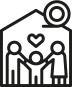
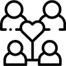
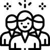
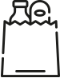
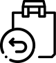
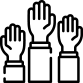
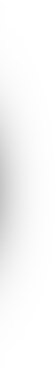

Quero adotar uma família
Se você quer fazer a diferença na vida de uma família, doe alimento e esperança! Com uma ligação, você doa esperança e com um depósito, você doa uma cesta emergencial sem sair da sua casa.
Cadastrar

Quero socorrer várias famílias
Você ou sua empresa querem ajudar mais de uma família? Juntos, podemos socorrer uma comunidade inteira!
Cadastrar

Quero várias cestas para a minha comunidade
Se em sua comunidade/ bairro/ associação existem várias pessoas sem alimento, precisando de socorro imediato, você pode fazer um pedido de várias cestas, conforme a quantidade de famílias necessitadas.
Cadastrar

Quero uma cesta para a minha família
Faça aqui o seu cadastro se estiver passando por uma situação em que o alimento já acabou ou está quase no fim. Vamos conectar você à uma família ou pessoa que pode te ajudar!
Cadastrar

Quero devolver a cesta recebida
Se você recebeu uma cesta do Caça-Fome e já conseguiu sair da situação difícil em que estava, e quer agora ajudar uma família que passa pela mesma dificuldade que a sua superou. Clique aqui:
Cadastrar

Quero ser voluntário
Você tem tempo e vontade de se dedicar ao trabalho voluntário? Coloque sua experiência e seus talentos à disposição do Caça-Fome! Queremos saber o que você pode fazer por nós.
Cadastrar
Como doar
Saiba como

Doar através do Caça-Fome é muito fácil! Nós temos um cadastro com muitas famílias precisando de ajuda! Você pode escolher ajudar uma só família, ou uma comunidade inteira.
Quero adotar uma família
Quero socorrer várias famílias
Quanto doar?
Quer saber como a sua doação transforma vidas? Veja quantas pessoas uma simples doação pode ajudar neste momento.
R$30
Este é o custo equivalente de uma cesta. Com esta contribuição você garante a alimentação de uma família de 5 pessoas por 20 dias.
R$300
Este é o custo equivalente de 10 cestas. Com esta contribuição você garante a alimentação de 10 famílias de 5 pessoas por 20 dias.
R$900
Este é o custo equivalente de 30 cestas. Com esta contribuição você garante a alimentação de uma pequena comunidade por 20 dias.
R$3000
Este é o custo equivalente de 100 cestas. Com esta contribuição você garante a alimentação de uma comunidade por 20 dias.
Outros Valores
R$
Doar
Escolha a contribuição que pode fazer. Qualquer quantia é bem vinda, e todo valor arrecadado será transformado em cestas básicas emergenciais para socorrer quem está com fome.